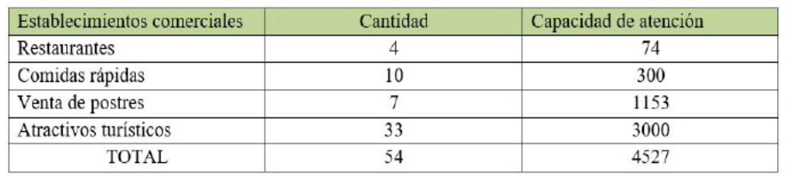
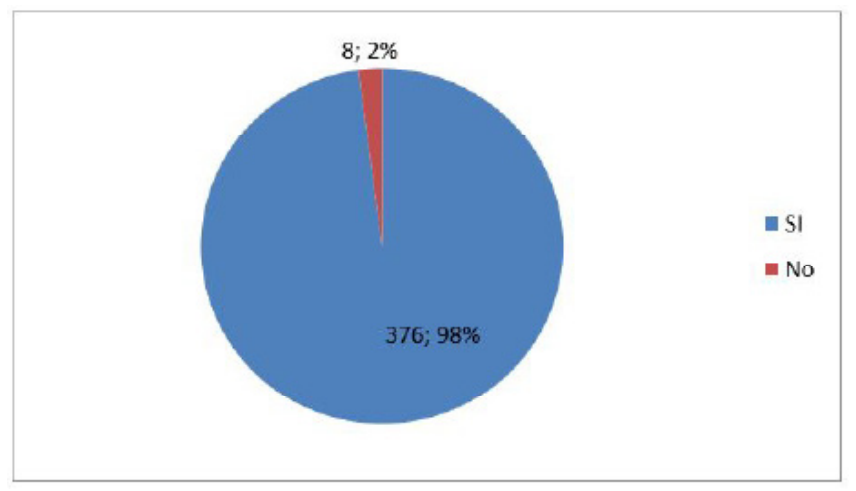
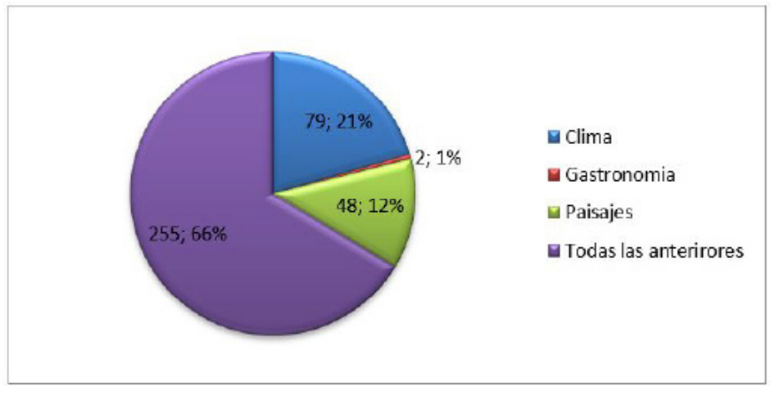
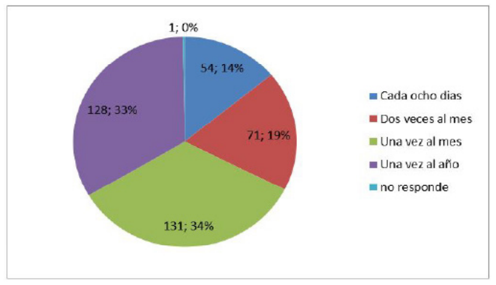

Introducción
El desarrollo de la presente investigación,
versa sobre identificación de estrategias de
gestión pública para el fomento del turismo
sostenible en Chinácota, Norte de Santander,
estructurada primeramente desde el análisis
general de información existente sobre el
tema, desde lo cual se desciende a denotar
la importancia del desarrollo turístico en
Colombia como línea estratégica del gobierno
nacional; examinando de manera subsiguiente
la relevancia del turismo en la región.
Norte de Santander al ser el Departamento
fronterizo más importante del país, con la
mayor capacidad de intercambio económico
y cultural, derivado de su legado histórico;
además de contar con una ostensible existencia
de recursos minero energéticos, riqueza
paisajística, fortalezas agrícolas y ganaderas,
cuenta con la posibilidad de aprovechamiento
y enfoque de estos factores para promover
estrategias que originen el impulso del turismo
sostenible en su territorio y particularmente
la municipalidad de Chinácota objeto de la
investigación.(Pardellas2004)
El turismo visto como un potencial económico
es la opción que los dirigentes públicos y líderes
deben fortalecer pero que hasta el momento
en la región no se ha desarrollado tampoco
se ha tenido en cuenta más sin embargo el
municipio es visto como destino turístico,
prestando así diversos servicios desde la
tradición, la necesidad de suplir la demanda de
todos aquellos que frecuentan la zona, es por
ello que se apremiante construir y fortalecer
bases sólidas con respeto a este sector ya que
se cuenta con un amplio panorama respecto
de paisaje, clima, gastronomía , historia
para hacer de este municipio un ejemplo en
proyectos sostenibles desde el turismo.
Por lo tanto el objetivo de esta esta
investigación ha sido la identificación de la oferta turística del municipio donde se
analizaron capacidad hotelera, estado de las
vías, percepción de los turistas, estado de vías,
poder adquisitivo entre otros. De otra parte se
buscaba identificar estrategias que se puedan
establecer desde la gestión pública como fin
de este proyecto y que a futuro se generen
propuestas aterrizadas con capacidad de
llevar al desarrollo del sector turístico en el
municipio con un propósito de sostenibilidad.
Según cifras del Ministerio de Comercio,
Industria y Turismo 2018 entre 2011 y 2017,
en Colombia se presentaron destacados
crecimientos en los principales indicadores
del turismo en el país: se incrementó en un
69% las llegadas de viajeros internacionales,
52% la generación de divisas, 19% la creación
de nuevos empleos y 74% en la incursión de
nuevas empresas al sector, generando una
oferta presente en alrededor de 281 municipios
del territorio nacional. De igual forma, según el
Departamento Nacional de Estadística (DANE),
el turismo, medido desde la rama de hoteles y
restaurantes, representó el 3,78% del Producto
Interno Bruto (PIB) en Colombia durante 2017
(Ministerio de Comercio, Industria y Turismo,
2018), evidenciando su gran potencial de
desarrollo.
Este contexto, hace que el sector turismo
sea un renglón estratégico para el Gobierno
Nacional, considerado como “el nuevo
petróleo de Colombia”, una opción viable
y rentable de desarrollo sostenible donde
el país, basado en su diversidad biológica y
cultural, fortalece su competitividad como una
alternativa para la generación de divisas, para
crear empleo y mejorar las condiciones de vida
de la población; así como constituirse en una
iniciativa para la transformación regional, la
reconciliación entre los colombianos y mejorar
la imagen del país.
El turismo es una de las actividades económicas
más importantes del planeta, representa 30%
de las exportaciones en el comercio global de servicios, generando 1 de cada 11 empleos
y el 10% del PIB mundial UNTWO (2017) De
acuerdo con esta organización, en 2017 se
movilizaron 1332 millones de viajeros en todo
el mundo y el turismo tiene una perspectiva
de crecimiento anual hasta el 2030 cercana a
3,8%; no obstante, para los destinos turísticos
de las economías emergentes, como Colombia,
este crecimiento ha sido superior al promedio
global, representando una variación de 4,8%
promedio anual entre 2005 y 2017.
El Departamento cuenta con importantes
recursos mineros como petróleo, carbón,
calizas y metales preciosos, así como con zonas
agrícolas y ganaderas con una considerable
producción de arroz, caña, palma de aceite,
ganado vacuno y caprino entre otros, que
han sido poco tecnificadas y explotadas
a escala industrial como producto de la
histórica influencia subversiva, que limita la
inversión en tecnificación y transporte de los
productos, especialmente en sus provincias
del Catatumbo y Ocaña ubicadas en la
parte norte del Departamento. Además de
sus riquezas naturales, Norte de Santander
concentra un amplio legado histórico y cultural
apenas mencionado, que a diferencia de otros
destinos turísticos del país como Bogotá,
Cartagena y Popayán que atraen anualmente a
numerosos turistas cuya motivación es rescatar
la historia y tradición cultural de Colombia, son
relativamente desconocidos para los nativos
de la región así como buena parte de la historia
que la ciudad y el Departamento han aportado
al desarrollo nacional. (Moreno 2014).
Estos insumos naturales y culturales conforman
una amplia oferta turística departamental –
como da cuenta el Fondo Mixto de Promoción
Turística Departamental– que sumada al marco
normativo de apoyo económico de proyectos
turísticos de desarrollo socioeconómico de las
regiones, y al nuevo marco de reconciliación
nacional subsecuente al proceso de paz con
las Fuerzas Armadas Revolucionarias de Colombia (FARC) y el Ejército de Liberación
Nacional), (ELN), favorecen la articulación del
plan de desarrollo nacional y departamental
con la inversión pública y privada, para generar
proyectos de explotación turística responsable
y socialmente comprometida, que además de
propiciar el desarrollo social y económico de
la región fundamenten el turismo histórico,
cultural, de aventura y natural, como nueva
impronta de una región en proceso de
transformación y con una prometedora
proyección económica en el mediano plazo
(Guerrero y Espinoza, 2017).
Estos insumos naturales y culturales conforman
una amplia oferta turística departamental –
como da cuenta el Fondo Mixto de Promoción
Turística Departamental– que sumada al marco
normativo de apoyo económico de proyectos
turísticos de desarrollo socioeconómico de las
regiones, y al nuevo marco de reconciliación
nacional subsecuente al proceso de paz con
las Fuerzas Armadas Revolucionarias de
Colombia (FARC) y el Ejército de Liberación
Nacional), (ELN), favorecen la articulación del
plan de desarrollo nacional y departamental
con la inversión pública y privada, para generar
proyectos de explotación turística responsable
y socialmente comprometida, que además de
propiciar el desarrollo social y económico de
la región fundamenten el turismo histórico,
cultural, de aventura y natural, como nueva
impronta de una región en proceso de
transformación y con una prometedora
proyección económica en el mediano plazo
(Guerrero y Espinoza, 2017).
Chinácota, conformado por aproximadamente
16.350 personas y un total de 7618 viviendas
habitables (DANE, 2018), no solo cuenta
con sus bellos paisajes, su cultura religiosa,
sus platos típicos también está ubicado en
límites de zona protegidas como el parque
el TAMA también posee valiosos recursos y
caudales hídricos como la quebrada Iscalá que
desemboca en el rio Pamplonita, de donde surten de agua los habitantes de la capital
del departamento Norte de Santander. Por lo
anterior es un municipio que posee diversas
características lo que lo proyecta a ser
sostenible turísticamente.(Matagira 2012).
Algunos de los servicios turísticos más
buscados son esparcimiento, parques
temáticos, gastronomía, descanso,
alojamiento, caminata, visita a monumentos
religiosos turismo histórico entre otros;
demanda que el Municipio no ha suplido, a
pesar de tener 18 hoteles, 31 restaurantes
(Guerrero 2017), al igual que 33 atractivos
turísticos dentro de los que se encuentran;
cerros, lagunas, parques naturales, senderos
ecológicos, iglesias, lugares deportivos entre
otros, para disfrutar en familia y amigos).
Por otra parte, este incremento de visitantes
también ha ocasionado que la ocupación
de suelo se haya venido manejando sin
planeación alguna, afectando de esta manera
las zonas aledañas a los caudales, siendo este
uno de los factores causales del déficit de
agua del servicio de acueducto en temporada
de festivos como puentes, semana santa, fin
de año, ferias, entre otros.
Lo anterior ha venido inquietando a la
comunidad en general, viendo la necesidad
de tomar medidas de mejora en la economía
a través del turismo pero con proyectos
sostenibles realizados desde los entes
gubernamentales. El servicio turístico prestado
no es el más adecuado, debido a que lo realizan
sin procesos establecidos en los planes de
desarrollo, es decir legalmente establecidos,
siendo prestados por los mismos habitantes
de las veredas sin capacitación, debido al gran
auge al que sea abocado el municipio en la
zonas rurales y vieron la oportunidad de ofrecer
variedades gastronómicas y de esparcimiento,
aunque también se debe recalcar que se
encuentran algunos establecimiento muy bien
organizado.
Para esta investigación se planteó como
objetivo identificar estrategias de gestión
pública para el fomento del turismo sostenible
en Chinácota, Norte de Santander, 2020.
Gestión pública local
Cuando se habla de gestión Pública se hace
énfasis en la forma como los actos se vuelven
eficientes, eficaces y en el momento que
se haga evaluación de los mismos, estos
sean verificables y cumplan los objetivos
propuestos. Partiendo de lo anterior la
administración local debe concebir a la entidad
territorial como una organización que busca
los mayores niveles de bienestar y de servicios
sociales para su población. En consecuencia,
el alcalde debe ser un líder que asume
funciones como planificador, organizador y
controlador de la organización que dirige.
En este orden de ideas, en el municipio se
deben tomar decisiones, con base en los
objetivos, estrategias, y políticas priorizadas
en el proceso de planificación; orientar la
ejecución de las acciones planeadas, y deben
llevar a cabo evaluaciones de las acciones
adelantadas, con el fin tanto de dar cuenta
a la comunidad y a los órganos de control,
como de tomar correctivos. El concepto que
reúne estos elementos –planeación, ejecución,
seguimiento y evaluación para cumplir con
las competencias y alcanzar objetivos y metas
de desarrollo acordadas democráticamente–
es el de gestión pública integral orientada
a resultados, objeto central del presente
documento (Cruz 2009).
Desarrollo turístico sostenible.
Lo importante de generar desarrollo sostenible
en las poblaciones, partiendo del turismo
es lograr contribuir al mejoramiento social,
económico y cultural, mostrando los atractivos
turísticos y pobladores que allí existen. Según
la Organización Mundial del Turismo, “las
directrices para el desarrollo sostenible del
turismo y las prácticas de gestión sostenible son aplicables a todas las formas de turismo
en todos los tipos de destinos, incluidos el
turismo de masas y los diversos segmentos
turísticos. Los principios de sostenibilidad se
refieren a los aspectos ambiental, económico
y sociocultural del desarrollo turístico,
habiéndose de establecer un equilibrio
adecuado entre esas tres dimensiones para
garantizar su sostenibilidad a largo plazo
(Ministerio de Comercio, Industria y Turismo,
2009) igualmente el turismo se caracteriza
por ser una actividad social y económica
relativamente joven y por englobar a una
gran variedad de sectores económicos y
disciplinas académicas (Morillo 2011).
“turismo sostenible”, este se vuelve
primero un promotor de la conservación
de tal patrimonio cultural y natural, si es
establecido de forma planificada, integrada,
abierta, dimensionada y participativamente,
es entonces viable y seguramente duradero
en el tiempo, ahora sí se puede hablar de
turismo sostenible como una alternativa de
desarrollo comunitario, el turismo sostenible
sería el detonante, el dinamizador del sitio
de interés al ponerlo en valor, una vez
puesto en valor despierta interés ya no solo
en antropólogos, arqueólogos y etnógrafos,
ahora despierta interés en los turistas, pero
esto no basta, los líderes y demás personas
participes de la actividad turista del sitio
de interés deben enfocar sus esfuerzos
de promoción y comercialización en los
segmentos de mercado interesados del
patrimonio cultural (Bertony 2008).
Varios destinos turísticos comunitarios
dependen netamente de los ingresos
percibidos por llegadas de turistas, lo que
involucra un trabajo más exhaustivo en
torno a la preservación del patrimonio, esto
en muchos casos los hace destinos más
exclusivos y caros, en relación a un destino
turístico comunitario que percibe réditos
del estado y que es capaz de montar toda una estructura que facilite la visita, promoción
y comercialización del destino, entonces la
autogestión se vuelve un aspecto importante
del destino, los comuneros deben buscar
mecanismos que les permitan montar toda
ese andamiaje de forma similar a un destino
comunitario que recibe réditos del estado, pero
todo esto a través de autogestión, no resulta
fácil, pero a través del diálogo, planificación
y socialización (Reyes et al , 2017). Todo lo
anterior se puede expresar en beneficios sin
necesidad de sobre estimar los costes y demás
impuestos para el desarrollo del turismo
sostenible de esta forma cumplir los objetivos
de sostenibilidad.
Desarrollo Turístico Del Municipio De
Chinácota.
El municipio se ha constituido en un centro
turístico de cabañas de descanso para los
habitantes del área metropolitana de Cúcuta,
que buscan clima y paisaje para su recreación.
La oferta turística está representada en,
aproximadamente, 200 cabañas en el 2007
“superando en estos tiempos las 400 cabañas,
construidas y un potencial de visitantes, los
fines de semana (4 sábados y 4 domingos por
mes), de 11.093 vehículos-mes, con un número
aproximado de 4 personas por vehículo para
un total de 44.372 turistas (equivalente a 5.547
turistas por fin de semana). Igualmente, cuenta
con los atractivos turísticos del Páramo Mejué
y la riqueza histórica de la Hacienda Iscalá,
con una bella casa colonial que perteneció
al Presidente de Colombia, General Ramón
González Valencia; la casa colonial donde se
firmó el pacto de paz de la guerra de Los Mil
Días, la parroquia San Juan Bautista, la Plaza
de Toros y otra casonas coloniales, ubicadas
en el entorno urbano del Municipio.(Ramírez
et al 2011).
Método
La investigación presenta un enfoque
cuantitativo que según Hernández, Fernández
y Baptista (2014, p. 4) representa un conjunto
de procesos secuenciales y probatorios. Cada
etapa precede a la siguiente y no es posible
saltar o eludir pasos. Finalmente acompañada
de metodología del marco lógico puesto
que la Metodología de Marco Lógico es
una herramienta para facilitar el proceso
de conceptualización, diseño, ejecución y
evaluación de proyectos.
El énfasis del Marco Lógico está centrado en la
orientación por objetivos, la orientación hacia
grupos beneficiarios y el facilitar la participación
y la comunicación entre las partes interesadas.
Es una investigación de carácter descriptivo en
el que se analizarán las ventajas de la región
al igual que lo que opinan sus habitantes. Se
establece descriptiva ya que como dice Bernal
(2000) es un nivel básico de investigación
y se convierte en base para otras clases de
investigación y se soporta principalmente en
técnicas como la encuesta, la entrevista, la
observación y la revisión documental.
Al desconocer el número de personas se tomará
una muestra representativa probabilística para
poblaciones infinitas, la cual se aplicará y se
trabajará con la muestra que arroje el análisis.
La fórmula es la siguiente:
Valores:
n = muestra
Z= nivel de confianza
p = probabilidad del éxito
q = probabilidad de fracaso
E = Margen de error
Utilizando un nivel de confianza del 95 %, un
margen de error del 5 %, una probabilidad
del éxito del 50% y probabilidad de fracaso
del 50% la muestra representativa seria la
siguiente:
El número total de pobladores que conforman
la muestra representativa es de 384 personas.
Para describir la oferta turística del municipio de
Chinácota y su contribución en la sostenibilidad
económica y financiera se realizará una
entrevista estructurada a la dependencia
de cultura y turismo del municipio donde se
verifique estadística y datos importantes del
desarrollo turístico y cultural de la región.
Para este proceso se realizará un cuestionario
estructurado y se plasmará la información
obtenida en una matriz documental.
Para la recolección de información se hizo
uso de instrumentos cuantificables como
la encuesta y métodos descriptivos como
la entrevista y revisión de documentos, el
proceso de encuesta arrojo 384 respuestas
a 11 preguntas previamente avaladas por
experto estadístico y se realizó proceso de
entrevista al encargado de la Secretaria de
agricultura desarrollo económico y turismo
Chinácota.
Resultados
Descripción de la Oferta Turística del
Municipio de Chinácota
En esta primera fase de identificación de la
oferta turística del Municipio se adaptó la
información suministrada por la secretaria de
agricultura desarrollo económico y turismo
a fecha de septiembre de 2019 de Chinácota
Norte de Santander, información que no ha
sido actualizada y aunque cuentan con bases
de datos con fechas, fotografías, tipo de
servicio que prestan, capacidad de atención
denota que apremia darle la importancia
al turismo iniciando con la creación de una
secretaria exclusivamente encargada de este
sector. (Chavez et al 2013).
Cuadro 1. Relación de entidades encuestadas

Fuente: Los investigadores
Análisis de Precepción de los Ciudadanos Frente a la Oferta Turística del Municipio

Figura 1. Intenciones o deseos de visita
Fuentes: los investigadores

Figura 2. Motivos para ir a Chinácota
Fuentes: los investigadores

Figura 3. Frecuencias de visita
Fuentes: los investigadores
En las tres figuras anteriores vemos claramente
la percepción del turista con respecto a todo
lo que tiene por ofrecer el municipio de
Chinácota con respecto a servicios turísticos,
brinda una idea clara que cuenta con lo más
importante que puede buscar una región que
se desea orientarse hacia el turismo como
lo es la taza de intención de visita de un 98%
seguido por las inclinaciones o preferencias a
la hora de visitar el municipio siendo estas su
gastrómana sus paisajes y su agradable clima,
a esto le agregamos que la frecuencia de visita
es constante. De acuerdo a la información
recolectada en esta investigación de la
cual surgen las bases sólidas para identificar
estrategias de gestión pública para el fomento
del turismo sostenible en el municipio de
Chinácota
Conclusiones
Enfocar la gestión pública en manejos
de recursos que contribuyen a satisfacer
las necesidades sociales, económicas y
ambientales de la región respetando los
recursos hídricos, ecológicos, diversidad
biológica, costumbres ancestrales e identidad
de su patrimonio cultural mediante la creación
de un plan decenal de turismo que se pueda
conectar con los de ordenamiento nacional y departamental donde se puedan obtener
recursos de forma directa ya que se evidencia
que los recursos para inversión turística son
nulos en el municipio.
Incluir dentro del plan de desarrollo municipal
proyectos de formación turística a la comunidad
que se puedan llevar a cabo mediante alianzas
con instituciones que presten estos servicios
educativos, como iniciativa de fortalecimiento
de cultura turística, manejo adecuado de los
residuos contaminantes, aprovechamiento
prudente al realizar estas actividades en
espacios verdes como montañas, quebradas y
senderos para que haya claridad en la medidas
implementadas desde la administración
pública.
Formular proyectos turísticos con enfoque
de sostenibilidad en el banco de proyectos
del municipio y de esta manera proyectar el
municipio de Chinácota a través del turismo
con carácter de sostenibilidad con una oferta
planificada, organizada, innovadora donde el
aprovechamiento de su territorio que es en un
90% verde sea el pilar y de esta manera hacerle
frente a los cambios a enfrentar luego de esta
pandemia, donde los destinos más valorados
serán la naturaleza y turismo experiencial
así estar alineados con los objetivos de desarrollo del milenio garantizando la
sostenibilidad del medio ambiente.
Referencias
- Bertoni, Marcela (2008). Turismo sostenible: su
interpretación y alcance operativo. Cuadernos
de Geografía: Revista Colombiana de
Geografía, (17),155-163.[fecha de Consulta
25 de Marzo de 2021]. ISSN: 0121-215X.
Disponible en: https://www.redalyc.org/articulo.oa?id=281821942010
- Bernal, César Augusto. (2000)”Metodología
de la investigación para Administración y
Economía”. Pearson Educación de Colombia.
Santafé de Bogotá. Colombia. Págs. 262.
- Cruz Hernández, José Gerardo (2009).
GERENCIA PÚBLICA EN COLOMBIA,
HACIENDO ÉNFASIS EN EL ACTUAL
GOBIERNO. Entramado, 5(2),152-163.[fecha
de Consulta 25 de Marzo de 2021]. ISSN: 1900-
3803. Disponible en: https://www.redalyc.org/articulo.oa?id=265419724010
- Chávez Dagostino, Rosa María, & Andrade Romo,
Edmundo, & Espinoza Sánchez, Rodrigo (2013).
Turismo y desarrollo sustentable: contribución
de Hispanoamérica. Teoría y Praxis, (13),9-
33.[fecha de Consulta 26 de Marzo de 2021].
ISSN: . Disponible en: https://www.redalyc.org/articulo.oa?id=456145103002
- DNP (2007) Índice departamental de innovación
para Colombia. https://www.dnp.gov.co/estudios-y-publicaciones/publicaciones/Paginas/2017.aspx
- DANE. (2018) Servicios Turismo. https://www.dane.gov.co/index.php/estadisticas-por-tema/servicios/turismo
- Guerrero, J.J., Espinosa, J.F., y Silva, L.M (2017)
NORTE DE SANTANDER, COLOMBIA. TURISMO HISTÓRICOCULTURAL,
NATURALEZA Y AVENTURA:
APUESTA ESTRATÉGICA PARA LA
PROYECCIÓN DEPARTAMENTAL EN EL
POSCONFLICTO. International Journal of
scientific Management and Tourism, 2017, Vol.
3 Nº1 pp 147-177
- González-Mendoza, J. A., & Fonseca-Vigoya,
M. D. S. (2016). Cadena de Valor Turismo
de Salud del Área Metropolitana de Cúcuta.
Respuestas, 21(1), 28-44. https://doi.org/10.22463/0122820X.632
- Moreno Alarcón, Daniela (2014). El camino del
turismo con igualdad. El caso de Cartagena de
Indias, Colombia. Memorias. Revista Digital
de Historia y Arqueología desde el Caribe,
(23),26-51.[fecha de Consulta 25 de Marzo de
2021]. ISSN: . Disponible en: https://www.redalyc.org/articulo.oa?id=85532558003
- Matajira V., Jorge M., & Poveda, Jesús, &
Ibáñez, Bibiana (2012). APORTES A LA
CONSTRUCCION DE UNA VISION
FRONTERIZA PARA LA SUBREGION
SURORIENTAL DEL DEPARTAMENTO
NORTE DE SANTANDER. Aldea Mundo,
17(33),31-42.[fecha de Consulta 25 de Marzo de
2021]. ISSN: 1316-6727. Disponible en: https://www.redalyc.org/articulo.oa?id=54332636005
- Mincomercio (2018) Informes de Turismo. https://www.mincit.gov.co/estudios-economicos/estadisticas-e-informes/informes-de-turismo
- Morillo Moreno, Marysela Coromoto (2011).
Turismo y producto turístico. Evolución,
conceptos, componentes y clasificación. Visión
Gerencial, (1),135-158.[fecha de Consulta 25 de
Marzo de 2021]. ISSN: 1317-8822. Disponible
en: https://www.redalyc.org/articulo.oa?id=465545890011
- REYES VARGAS, María Victoria, & ORTEGA
OCAÑA, Ángel Fernando, & MACHADO CHAVIANO, Esther Lidia (2017). MODELO
PARA LA GESTIÓN INTEGRADA
DEL TURISMO COMUNITARIO
EN ECUADOR, CASO DE ESTUDIO
PASTAZA. REVESCO. Revista de Estudios
Cooperativos, (123),250-275.[fecha de
Consulta 25 de Marzo de 2021]. ISSN: 1135-
6618. Disponible en: https://www.redalyc.org/articulo.oa?id=36750475010
- Ramirezparis Colmenares, Xiomara, &
Sepúlveda Yáñez, Álvaro Jesús (2011). Diseño
de una estrategia promocionalpara posicionar
la Zona Norte de Santander (Colombia) -
Estado Táchira (Venezuela). Pensamiento &
Gestión, (31),56-72.[fecha de Consulta 25 de
Marzo de 2021]. ISSN: 1657-6276. Disponible
en: https://www.redalyc.org/articulo.oa?id=64620759004
- Pardellas de Blas, Xulio X., & Padín Fabeiro,
Carmen (2004). La planificación turística
sostenible: un análisis aplicado al municipio
de Caldas de Reis . Revista Galega de
Economía, 13(1-2),0.[fecha de Consulta 26 de
Marzo de 2021]. ISSN: 1132-2799. Disponible
en: https://www.redalyc.org/articulo.oa?id=39113209
- UNTWO (2017) la organización mundial del
turismo y la organización internacional del
trabajo debaten las condiciones laborales
del sector. https://www.unwto.org/es/laorganizacion-mundial-del-turismo-y-laorganizacion-internacional-del-trabajodebaten-las
- Velazquez Valadez, G., & Cardona Reséndiz,
G. A. (2017). El crecimiento económico
en México y su relación con el turismo y
medio ambiente (2003-2015). Mundo FESC,
7(13), 56-72. Recuperado a partir de https://www.fesc.edu.co/Revistas/OJS/index.php/mundofesc/article/view/104